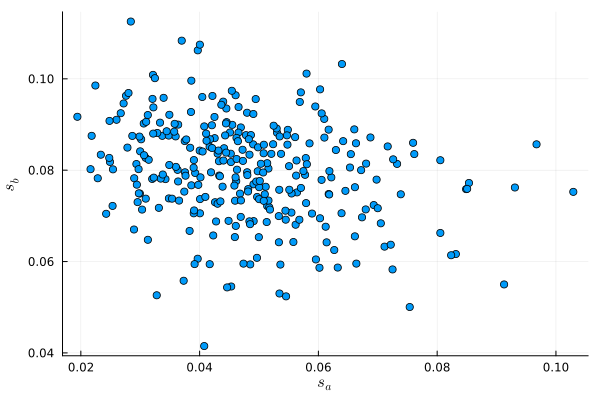
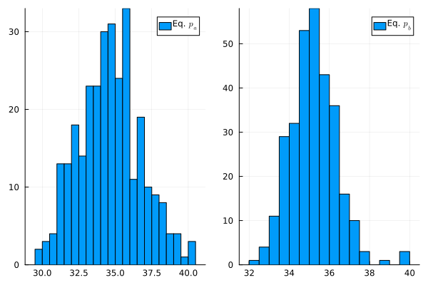

B^D_k is a vector of observed product characteristics that consumers care about
\xi^D_k is a vector of unobserved product characteristics that consumers care about
\nu_{ik} is the (mean zero) idiosyncratic taste of consumer i for product k
V_{k} is the mean utility for product k
If they do not buy a car, they get zero utility. Consumers are utility maximizers, so they pick the option that yields the highest utility.
2.2 Demand: theoretical model
Assuming \nu_{ik} is distributed in the population following a Type I Extreme Value distribution, we can derive a closed-form expression for expected market shares of products a and b. This will give us the classic Logit model (we will see the details of this in the next unit)
But the expression above refers to expected shares and does not fit the data exactly. For this reason, we add an idiosyncratic demand shock \epsilon^D_{k,j} to obtain
We assume \epsilon^D_{k,j} has mean zero and is uncorrelated with p_{k,j}, B^D_{k,j}, and \xi^D_{k,j}
2.5 Supply: theoretical model
Since this market is a duopoly, firms anticipate that their pricing decisions affect their demands mutually
Firms then choose the price that maximizes their expected profits given the price their competitor has chosen: Bertrand competition
We assume that the outcome of this process is a Nash equilibrium: firms do the best they can given what others are doing and no firm has an incentive to unilaterally deviate
Hence, each market is in a Nash-Bertrand equilibrium
2.6 Supply: theoretical model
Let c_{k} be the constant marginal cost. Then in each market each firm solves:
\max_{p_{k}} \pi(p_k, p_{-k}) = p_{k} s_k(p_k, p_{-k}) - c_{k} s_k(p_k, p_{-k})
Using the closed-form expression for the derivative \frac{\partial s_k(p_k, p_{-k})}{\partial p_k} = -\alpha s_k (1-s_k), it follows that
\begin{align}
s_k - \alpha(p_k - c_k)s_k(1-s_k) = 0\\
c_k = p_k - \frac{1}{\alpha(1-s_k)}
\end{align}
Thus, given a value of parameter \alpha, we can calculate marginal costs that rationalize equilibrium prices and shares
2.8 Supply: statistical model
With parameter estimate \hat{\alpha} and using the expression for rationalized marginal costs based on the FOC, we can write predict expected marginal costs
\hat{c}_{k,j} = p_{k,j} - \frac{1}{\hat{\alpha}(1-s_{k,j})}
2.9 Supply: statistical model
We parameterize marginal cost using observable input costs and add an idiosyncratic cost shock \epsilon^S_{k,j} to accomodate for differences from the expectation
\theta^D is the parameter column vector [\beta_0 \; -\alpha \; \beta_1]^\prime
X^D is the row vector [1 \; p_{k,j} \; B^D_{k,j}], with B^D_{k,j} being a dummy variable receiving 1 for product b (k=b) or 0 otherwise
B^D_{k,j} will pick up all the perceived product characteristics that are constant across markets
3.3 Estimation: demand moment conditions
Denote the instrument vector Z_{k,j} = [1 \; B^D_{k,j} \; t_{j} \; l_{j} ]. Then, we can form moment conditions
E\left[Z^\prime_{k,j}\epsilon^D_{k,j}\right] = 0
Q: How many moment conditions do we have here?
3.4 Estimation: demand moment conditions
A: We have four moment conditions from the demand side
Again, we have unobserved characteristics that affect cost. However, endogeneity is less of a concern here if we consider this sector to be a small part of the economy:
Prices for steel and labor clear on much bigger markets, thus decisions of product characteristics are unlikely to affect their prices
For this reason, we can more reasonably assume that E[t_{j}\epsilon^S_{k,j}]=0, E[l_{j}\epsilon^S_{k,j}]=0, and E[B^S_{k,j}\epsilon^S_{k,j}]=0
\theta^S is the parameter column vector [\gamma_0 \; \gamma_1 \; \gamma_2 \; \gamma_3]^\prime
X^S is the row vector [1 \; B^S_{k,j} \;t_{j} \;l_{j}], with B^S_{k,j} being a dummy variable receiving 1 for product b (k=b) or 0 otherwise
Since X^S are instruments for themselves (and note that X^S_{k,j} = Z_{k,j}, we can construct supply moment conditions
E\left[Z^\prime_{k,j}\epsilon^S_{k,j}\right] = 0
Q: How many moment conditions do we have here?
3.7 Estimation: demand moment conditions
A: Again, we have four moment conditions, now from the supply side
\begin{align}
E\left[\epsilon^S_{k,j}\right] & = 0\\
E\left[B^S_{k,j}\epsilon^S_{k,j}\right] & = 0\\
E\left[t_{j}\epsilon^S_{k,j}\right] & = 0\\
E\left[l_{j}\epsilon^S_{k,j}\right] & = 0
\end{align}
4 Data Generation
Let’s stop here to check out the data generating script.
4.1 Data Generation: quantities
Distribution of shares across markets

4.2 Data Generation: prices
Distribution of equilibrium prices across markets

5 Programming the estimation
5.1 Time for some actual estimation
Let’s work! The data for this exercise are in file duopoly_shares_data.csv.
Our empirical plan is:
Using these 8 moment conditions, joinly estimate parameter vector \theta = [\theta^D, \theta^S] with GMM
Using our estimate \hat{\alpha}, predict marginal costs (equation 2) and calculate the average Lerner index for each car model: \hat{L}_k = \frac{1}{N} \sum_{j=1}^N \frac{p_{k,j} - \hat{c}_{k,j}}{p_{k,j}}
5.2 Loading and preparing the data
Code
usingDataFrames, CSVdf = CSV.read("duopoly_shares_data.csv", DataFrame);df[1:4, :] # First few rows
4×7 DataFrame
Row
MarketID
s_k
p_k
s_0
steel
labor
product
Int64
Float64
Float64
Float64
Float64
Float64
String1
1
1
0.0490224
34.4
0.865322
7.87
22.38
a
2
1
0.0856551
34.82
0.865322
7.87
22.38
b
3
2
0.075947
31.6319
0.838059
7.5
22.74
a
4
2
0.0859944
34.4219
0.838059
7.5
22.74
b
5.3 Loading and preparing the data
This data set already includes s_0 calculated for you. Let’s get N and generate
log(s_{k,j}) - log(s_{0,j})
B_{k,j}
Code
N =nrow(df); # Get number of rowsdf.logsk_logs0 =log.(df.s_k) -log.(df.s_0); # Calculate LHS of demand equationdf.is_B = (df.product .=="b"); # Create dummy variable for product Bdf[1:4,:] # Check first rows
4×9 DataFrame
Row
MarketID
s_k
p_k
s_0
steel
labor
product
logsk_logs0
is_B
Int64
Float64
Float64
Float64
Float64
Float64
String1
Float64
Bool
1
1
0.0490224
34.4
0.865322
7.87
22.38
a
-2.87082
false
2
1
0.0856551
34.82
0.865322
7.87
22.38
b
-2.31277
true
3
2
0.075947
31.6319
0.838059
7.5
22.74
a
-2.40105
false
4
2
0.0859944
34.4219
0.838059
7.5
22.74
b
-2.27681
true
5.4 Loading and preparing the data
It might also be useful to prepare matrices X and Z
Code
X = [ones(N) df.p_k df.is_B];Z = [ones(N) df.is_B df.steel df.labor];
5.5 Moment conditions function
Next, we program function g_i(θ) that receives parameter vector \theta and returns the eight moment conditions for all observations (N \times 8 matrix). Here is a way to structure it
Code
functiong_i(θ)# DEMAND SIDE θ_d = θ[1:3] # Demand parameters# Epsilons for demand side ϵ_d = df.logsk_logs0 - (X * θ_d) # Moment conditions for demand side m_di = Z .* ϵ_d# SUPPLY SIDE# Calculate implied costs α =-θ[2] # We need it to recover costs c_k = df.p_k -1/α .*1./(1.- df.s_k) θ_s = θ[4:7] # Supply parameters# Epsilons for supply side ϵ_s = c_k - (Z * θ_s)# Moment conditions for supply side m_si = Z .* ϵ_s# Return matrices side by side (N x M)return([m_di m_si])end;
5.6 Moment conditions function
Then, we program g_N(θ) to calculate the sample analogue: g_N(\theta) = \frac{1}{N} \sum_{i=1}^N g(y_i, x_i;\theta)
Code
functiong_N(θ)# Get moment vectors g_is =g_i(θ)# Take means of each column and returnreturn [sum(g_is[:, k]) for k in1:M] ./ Nend;
5.7 GMM estimation
With function g_i(θ), we can use Optim package to minimize objective function Q(θ)
Code
usingLinearAlgebraM =8# Eight moment conditionsW_0 =I(M) # Identity MatrixfunctionQ(θ; W = W_0)# Get g_N m_i =g_i(θ) G =g_N(θ)# Calculate Q G'* W * Gend;
5.8 GMM estimation
For the first step, use W as the identity matrix and find estimate θ_1
For the second step, \hat{W}=(\hat{S})^{-1}. So, you will need to calculate
df.lerner_k = (df.p_k - df.c_k) ./ df.p_k;# Firm Amean_lerner_a =sum(df.lerner_k[.!df.is_B])./(N/2);# Firm Bmean_lerner_b =sum(df.lerner_k[df.is_B])./(N/2);println("The mean Lerner index of firm A is $(round(mean_lerner_a, digits=4)) and for firm B is $(round(mean_lerner_b, digits=4))")
The mean Lerner index of firm A is 0.2541 and for firm B is 0.2577
So about 24% of the price is due to market power.
Firm B has slightly higher market power due to its perceived higher quality (\beta_1 = 0.63 > 0)
All else equal, what is the WTP to have model B over model A?
Footnotes
In the script to generate this data, products have an omitted quality index that affects both utility and costs.↩︎